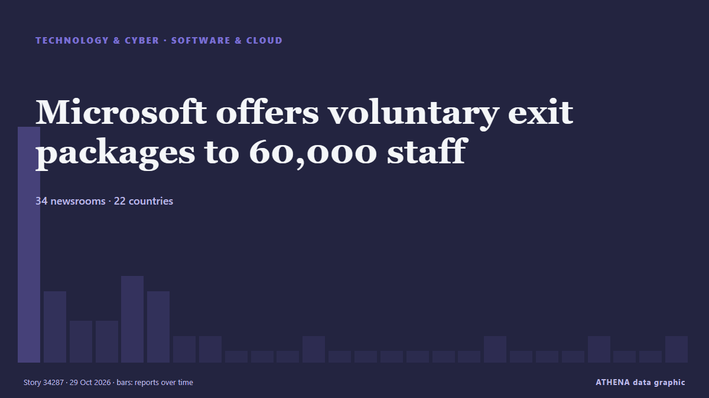

Microsoft offers voluntary exit packages to 60,000 staff

SAN FRANCISCO: Microsoft is offering voluntary buyouts to about 60,000 employees, the company said on Monday, roughly a quarter of its workforce, as the tech giant seeks to cut costs while pouring… from Business Recorder
Reported independently by 34 outlets in 22 countries since 26 Oct, first by TechCrunch; coverage is fading. ATHENA rates the risk moderate (2.0/10), driven mainly by the severity of the harm described and its geographic and sector reach. Confidence is 86% (high), with 34 independent outlets corroborating it and an average source reliability of 74%. Who reported it: 9 newsrooms in India, 5 newsrooms in United States, 3 newsrooms in Pakistan. The coverage ran from 26 Oct to 29 Oct, over 75 hours.
Why it matters: Technology and cyber developments shape security, competition and the rules of digital life.
What changed: 3 new reports from 3 newsrooms in the 24 hours to 29 Oct.
At a glance
Selected, scored and written by ATHENA's published methodology. No editor intervenes in individual events. How this is produced ›
| 26 Oct 15:58 UTC | 15 |
|---|---|
| 26 Oct 18:58 UTC | 4 |
| 26 Oct 21:58 UTC | 2 |
| 27 Oct 00:58 UTC | 2 |
| 27 Oct 03:58 UTC | 5 |
| 27 Oct 06:58 UTC | 4 |
| 27 Oct 09:58 UTC | 1 |
| 27 Oct 12:58 UTC | 1 |
| 27 Oct 15:58 UTC | 0 |
| 27 Oct 18:58 UTC | 0 |
| 27 Oct 21:58 UTC | 0 |
| 28 Oct 00:58 UTC | 1 |
| 28 Oct 03:58 UTC | 0 |
| 28 Oct 06:58 UTC | 0 |
| 28 Oct 09:58 UTC | 0 |
| 28 Oct 12:58 UTC | 0 |
| 28 Oct 15:58 UTC | 0 |
| 28 Oct 18:58 UTC | 0 |
| 28 Oct 21:58 UTC | 1 |
| 29 Oct 00:58 UTC | 0 |
| 29 Oct 03:58 UTC | 0 |
| 29 Oct 06:58 UTC | 0 |
| 29 Oct 09:58 UTC | 1 |
| 29 Oct 12:58 UTC | 0 |
| 29 Oct 15:58 UTC | 0 |
| 29 Oct 18:58 UTC | 1 |
| 26 Oct 16:01 UTC | 0.0 |
|---|---|
| 26 Oct 17:13 UTC | 1.4 |
| 27 Oct 07:02 UTC | 2.1 |
| 29 Oct 19:00 UTC | 2.0 |
Why these numbers
Importance
Risk
Confidence
The reporting — who reported it, and when
headline as published · opens the original- TechCrunch · United StatesMicrosoft offers buyouts to around 60,000 employees
- CNBC World · United StatesMicrosoft offers voluntary buyouts to 60,000 employees as AI leads to efficiency push
- CNA (Channel NewsAsia) · SingaporeMicrosoft offers buyouts to around 60,000 employees to contain costs
- Business Recorder · PakistanMicrosoft offers voluntary exit packages to 60,000 staff
- The Next Web · NetherlandsMicrosoft offers buyouts to 60,000 employees, about a quarter of its staff
- Times of India · IndiaMicrosoft extends buyouts to 60,000 staff in India, US, UK and Canada
- Asharq Al-Awsat (English) · Saudi ArabiaMicrosoft Offers Voluntary Exit Packages to 60,000 Staff
- NDTV · IndiaMicrosoft Offers Exit Packages To 60,000 Staff As Company Pours Money Into AI
- Business Recorder · PakistanMicrosoft is offering buyouts to around 60,000 employees, Business Insider reports
- Stuff · New ZealandMicrosoft offers a quarter of its global workforce voluntary buyouts as AI spending accelerates
- Indian Express · IndiaMicrosoft offers a quarter of its global workforce voluntary buyouts as AI spending accelerates
- Anadolu Agency (English) · TurkeyMicrosoft offers voluntary exit program to employees in 4 countries
- Guardian Business · United KingdomMicrosoft to reportedly offer buyouts to 60,000 employees in latest cuts
- The Independent · United KingdomMicrosoft offers 60,000 employees voluntary buyouts in effort to slash a quarter of its workforce
- Fast Company · United StatesMicrosoft wants thousands of employees to leave, and it’s willing to pay them to do it
- CBC News · CanadaMicrosoft gives voluntary buyout offer to about 60,000 employees
- Vanguard · NigeriaMicrosoft offers voluntary exit packages to 60,000 staff
- Fortune · United StatesMicrosoft offers buyouts to nearly 30% of workforce in ongoing AI shift
- Free Malaysia Today · MalaysiaMicrosoft offers voluntary exit packages to 60,000 staff
- Indian Express · IndiaMicrosoft offers voluntary exit packages to 60,000 eligible employees, including in India
- Daily Mirror · Sri LankaMicrosoft offers nearly 60,000 employees ‘voluntary exit’ offers
- The Hindu · IndiaMicrosoft offers voluntary exit packages to 60,000 staff, with some Indian teams eligible
- Jamaica Observer · JamaicaMicrosoft offers voluntary exit packages to 60,000 staff
- Indian Express · IndiaMicrosoft offers voluntary exit to 60,000 employees: What it means for India staff
- The Korea Times · South KoreaMicrosoft offers voluntary exit packages to 60,000 staff as AI spending accelerates
- DigiTimes Asia · TaiwanAI spending surges, Microsoft opens exit door to 60,000 employees
- NDTV · India"Hire The Robot, Fire The Human": Gates' Warning, Then Microsoft Buyouts
- RTÉ News · IrelandMicrosoft offers buyouts to 60,000 staff to contain costs
- Scroll.in · IndiaMicrosoft offers exit packages to 60,000 employees as it scales up AI investment
- CGTN (World) · ChinaMicrosoft offers buyouts to around 60,000 employees to contain costs
- AzerNews · AzerbaijanMicrosoft targets 60,000 employees with voluntary buyout offer
- Türkiye Today · TurkeyMicrosoft offers voluntary exit to staff in four countries
- IOL · South AfricaMicrosoft offers voluntary exit packages to 60,000 staff as AI spending continues to soar
- Times of India · IndiaMicrosoft employees in India can now opt for a buyout: Who qualifies and what it pays
- BBC Business · United KingdomMicrosoft profits soar days after announcing thousands of layoffs
- Business Recorder · PakistanMicrosoft to raise $25 billion in US bond sale, reports
- Fast Company · United StatesMore companies like Microsoft are using buyouts. Should you take one?